For The Record
In celebration of its 15th anniversary, the Red Bull Music Academy – revered as one of the most progressive institutions in today's musical landscape – has paired up a compelling selection of top artists and industry insiders, curating conversations on some of the most relevant topics in music today.
For The Record features personalities like Nile Rodgers, Erykah Badu, DJ Harvey, Lee ‘Scratch’ Perry and Just Blaze in conversation with their peers. The 15 talks took place around the world in locations such as Amsterdam, Paris, New York and Berlin. Wide-ranging and expansive, the artists involved touched on an array of topics, live performance, instruments/interfaces, conceptualism, drumming, and rhythm among them.
In addition to the conversations, top music journalists – including Philip Sherburne, Joe Muggs, Jeff ‘Chairman’ Mao and Sheryl Garratt – contribute essays about each of the personalities included. Together with stunning visual design by Chris Rehberger’s Double Standards agency, the results make for one of the most insightful publications on the current state of music and the music industry.
The book is available through Gestalten
Contents
Joao Barbosa x kalaf angelo x mulatu astatke
Two members of Buraka Som Sistema talk Africa with the founder of Ethio-jazz.
bernard purdie x jaki liebezeit
The most sampled drummer in history meets the most repetitive drummer in history.

martyn ware x nile rodgers
How to write a hit without really trying: The Chic frontman and Heaven 17 mastermind compare notes.
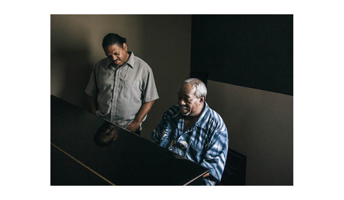
kerri chandler x patrick adams
Studio insights from the soulful worlds of boogie, disco and house.
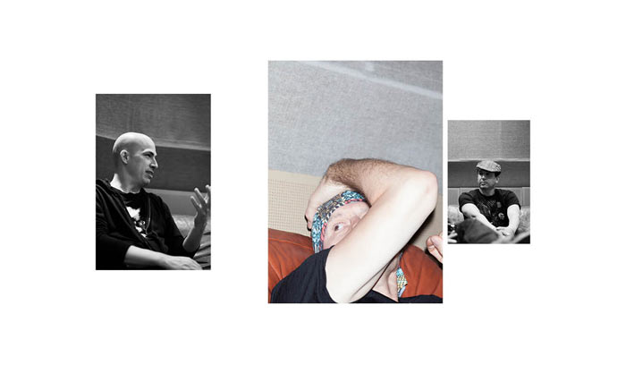
gareth jones x metro area
Depeche Mode’s go-to studio hand syncs up with a couple of NYC perfectionists.

carsten nicolai x olaf bender x uwe schmidt
Three avant-garde Germans unveil the blueprints to work and life.

benny ill x moritz von oswald
The Horsepower Productions don goes deep into the bins with dub techno aristocracy.

adrian sherwood x lee 'scratch' perry
A Jamaican dub originator and an Englishman whose life was changed by the echo chamber.
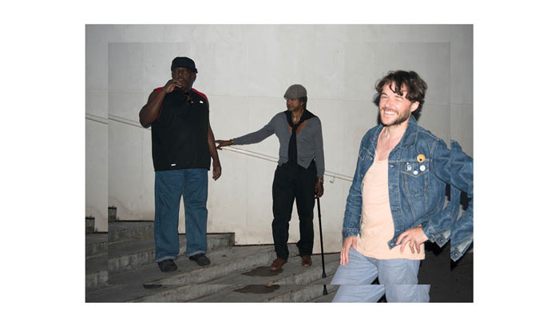
matias aguayo x sly & robbie
A Chilean-born German producer and two Jamaican session masters find common ground.

ben ufo x dj harvey
A set of UK spinners who know that the dancefloor never lies.
cosey fanni tutti x nik void
Two generations of confrontational British music on giving the audience what it wants.

modeselektor x mykki blanco
A genre-blending electronic duo chats with a gender-bending MC.

erykah badu x the underachievers
21st century soul’s premier doula sits down with Brooklyn’s new breed.

just blaze x paul riser
The Roc-A-Fella architect swaps stories with the conductor of the Motown hit factory.

Robert henke x tom oberheim
Two tech pioneers who have devoted their careers to the future of music production.
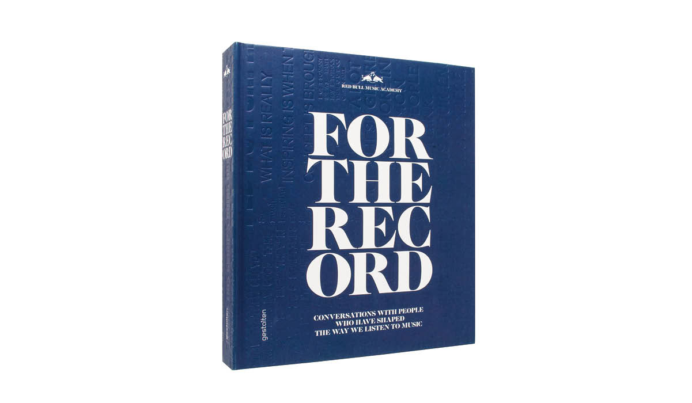
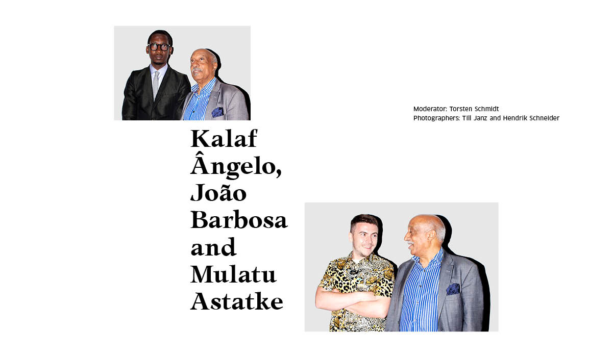
It is often said that the African continent is the root of all things.
When people in all corners of the globe today consider Africa the cradle of civilization, it is with thanks to ambassadors like Mulatu Astatke, who has spent a great portion of his career highlighting said role – whether it be through his music or in his lectures and talks. As part of Lisbon’s Buraka Som Sistema, João Barbosa and Kalaf Ângelo have similar aims. Their merging of Angolan kuduro with modern electronic music production has the same global outlook as Astatke.
On July 4th, we brought together Ângelo, Astatke and Barbosa in Amsterdam. Ângelo, a poet and sometime journalist, quickly took the reins of the conversation, asking questions of both Astatke and his bandmate Barbosa.
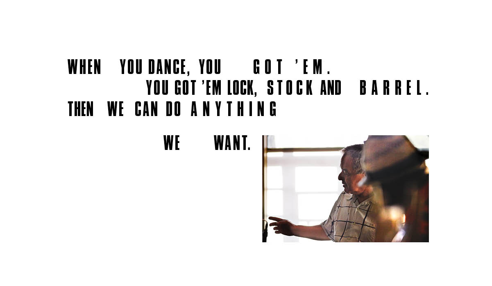
The world’s most sampled drummer and the world’s most repetitive drummer.
Two statements that may not be technically true, but you’d be forgiven for thinking so. Bernard Purdie’s been a go-to session man for nearly 50 years, working for the likes of James Brown, Dizzy Gillespie, Cat Stevens, Hall & Oates, Steely Dan and – if you love a good rumor – The Beatles themselves. Jaki Liebezeit, meanwhile, is patience personified. He was the man behind the skins for krautrock giants Can, building his legend on playing the same thing for longer than you can imagine – and then for about 15 minutes more. Few drummers have played so little for so long. Fewer have sounded better doing it.
Purdie visited Cologne in May 2013, and the two met in Liebezeit’s rehearsal space on the fourth floor of a former chocolate factory for a chat.
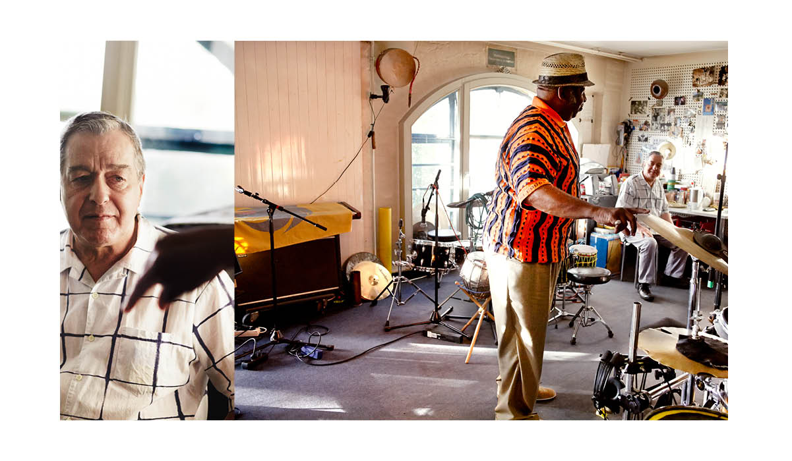
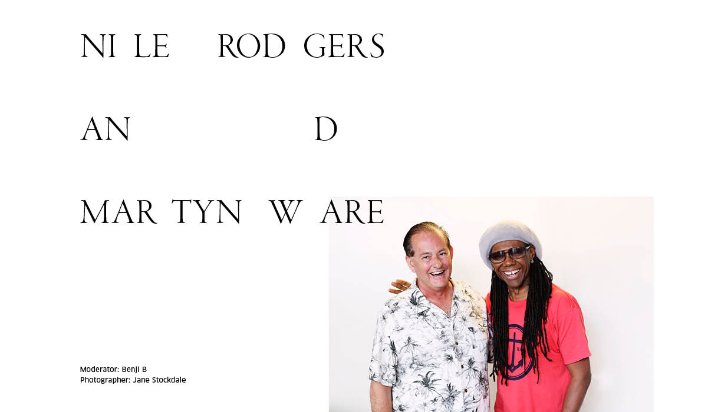
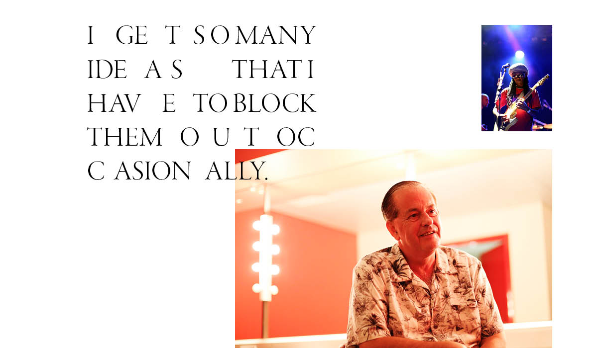
Making hit records ain’t easy, but Nile Rodgers and Martyn Ware work harder at it than most.
Separately, the duo is responsible for some of the most enduring moments in pop music history. Rodgers, as part of Chic, gave a human pulse to the often bloodless thump of disco. A few years later, Ware began to learn how to tame unruly synthesizers in the Human League and Heaven 17. Both went on to sit in the producer’s chair for arena-filling acts, adding their signa- ture touch to chart-topping material from Madonna, Tina Turner and David Bowie.
What connects the two is a love of songwriting. And when Ware visited Rodgers at a Chic soundcheck before a recent gig in London, that’s where their conversation began. Rodgers had traveled over- night to get to the Thames, but once he sat down with Ware his energy was high. A few days later, Rodgers announced doctors had given him an “all-clear” in his fight with cancer.
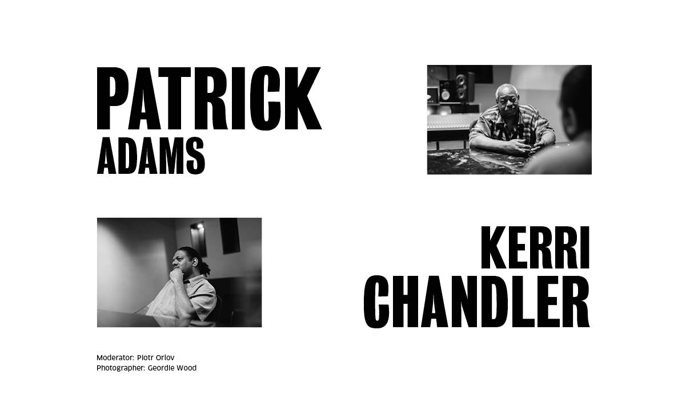
Capturing a combination of modern and classic in a studio session is never easy.
Unless you’re Patrick Adams, that is. His marriage of idiosyncratic effects and radio-friendly hooks throughout the ’70s and ’80s left an indelible mark on American music and New York dance history. That sound also inspired a young Kerri Chandler, whose diet of Adams-produced records provided the foundation for his own forays into music. Growing up on his father’s record collection, Chandler reinterpreted those soulful boogie moments into the house sound that was emerging from New Jersey’s renowned Zanzibar club in the late ’80s. Clasping a vinyl copy of Cloud One’s “Atmosphere Strut,” Chandler met Adams at Sigma Sound Studios in Philadelphia. One of America’s most celebrated studios, Sigma not only defined Gamble and Huff’s “Sound of Philadelphia Soul,” but has been home to musical icons like David Bowie, The O’Jays, The Jackson 5 and many more since 1968.
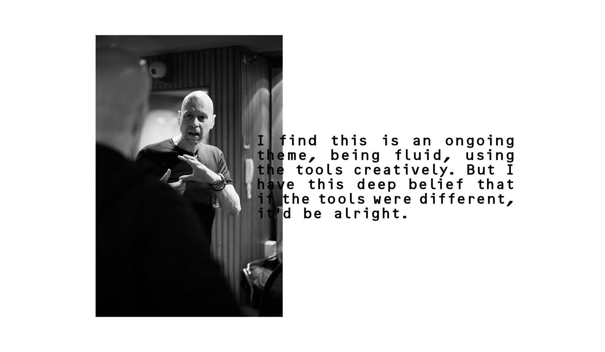
Gareth Jones has often said that the tools of the trade don’t matter. It’s the people using the tools.
Metro Area – the duo of Morgan Geist and Darshan Jesrani – grew up listening to many of the records that Jones worked on in the ’80s, desperate to find out what those tools were. We brought the trio together in Berlin at Hansa Studio, where Jones produced acts like Einstürzende Neubauten, Depeche Mode and Ideal, to compare and contrast creative processes and sonic approaches.
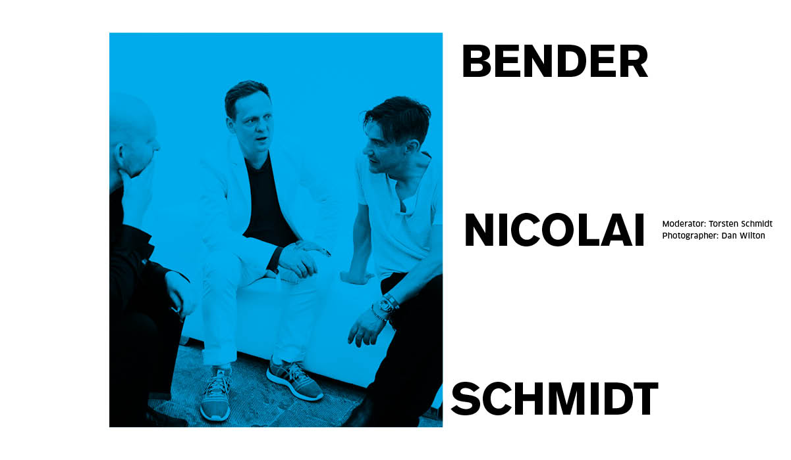
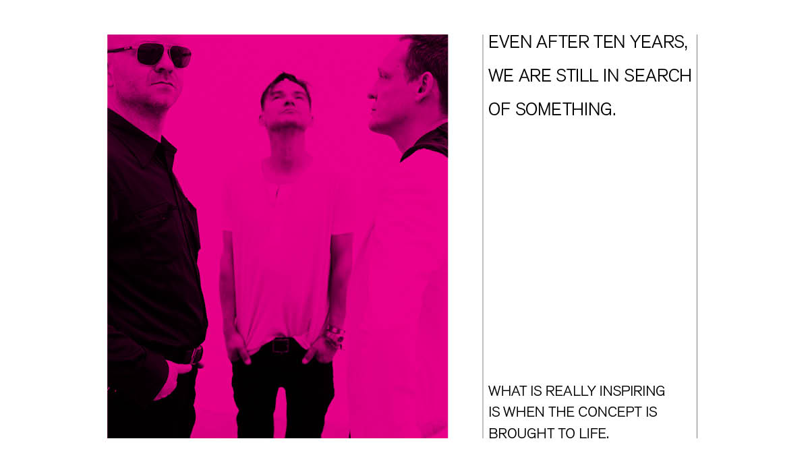
Uwe Schmidt is the man of a thousand aliases. Carsten Nicolai and Olaf Bender are largely known for focusing on one.
All of them, however, have dedicated their careers toward the same end: Exploring the conceptual limits of music. Carsten and Olaf are co-owners of experimental electronic label Raster-Noton, an imprint that has recently seen two album releases from Uwe Schmidt’s Atom TM project – one that he says will be his sole music project for the foreseeable future. Nicolai and Bender are also taking stock at the moment: Their Diamond Version project, released through Mute Records, has seen their usual ascetic aesthetic take on some muscle. The trio met with yet another German, Red Bull Music Academy founder Torsten Schmidt, in Barcelona at the 20th edition of the Sónar festival. Sitting in the shadow of the Mies van der Rohe-designed German Pavilion, they spoke about identity, conceptualism and Menschmaschinen in general.
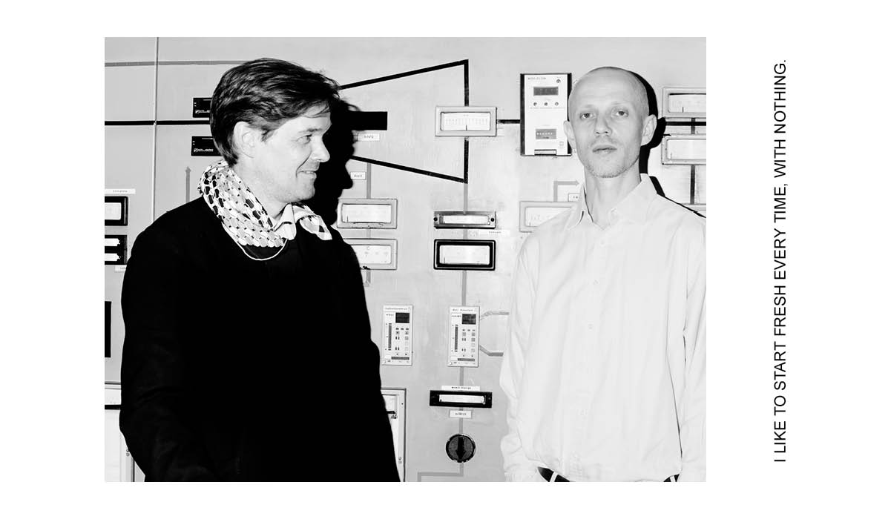
The very basis of music is simple physics. And bass is one of the most powerful carriers of physicality in music.
Benny Ill and Moritz von Oswald’s careers have been built on those foundations. Ill, along with the rest of the Horsepower Productions crew, evolved 2-step into what would eventually become dubstep. Von Oswald, alongside Mark Ernestus, laid the groundwork for dub techno. In early July we asked the two to chat with one another at Kraftwerk Berlin’s Schaltraum – a former power station control room. Always tending to detail, the two spoke slowly and thoughtfully, often taking several seconds before beginning to answer a question.


It was an unlikely – almost radical – question: What if we use the mixing desk as an instrument too?
In the ’60s, the producer was most often employed to simply record the music faithfully. Lee ‘Scratch’ Perry changed all that, introducing the idea of dub to the world. This radical perceptual shift is now ingrained in the DNA of popular music, its influence inescapable. One of its greatest adherents is the UK’s Adrian Sherwood, who started listening to Perry’s music as a pre-teen. Struck by his alien and hypnotic work with artists such as Bob Marley and The Congos, Sherwood struck out on his own journey with his On-U Sound imprint and as a member of the experimental industrial hip hop group Tackhead. Sherwood first met Perry in the ’70s, and began to work with him in the mid-’80s and on up until the present day.
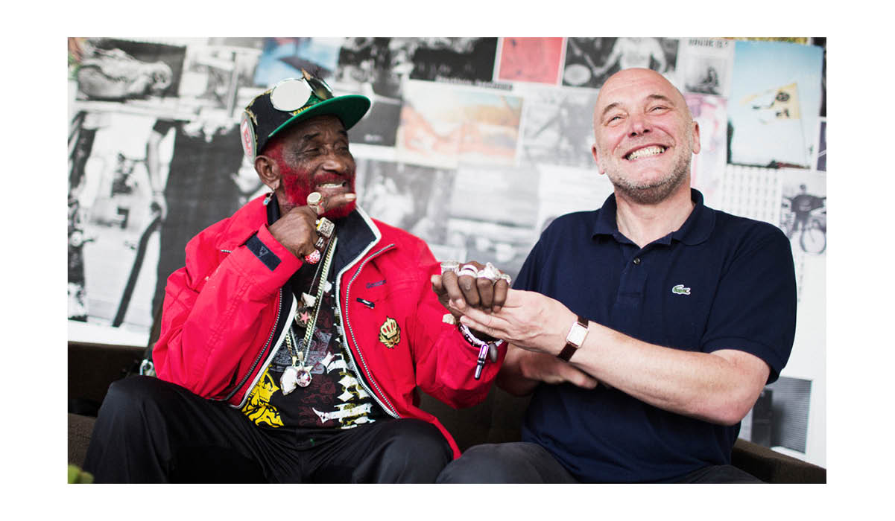
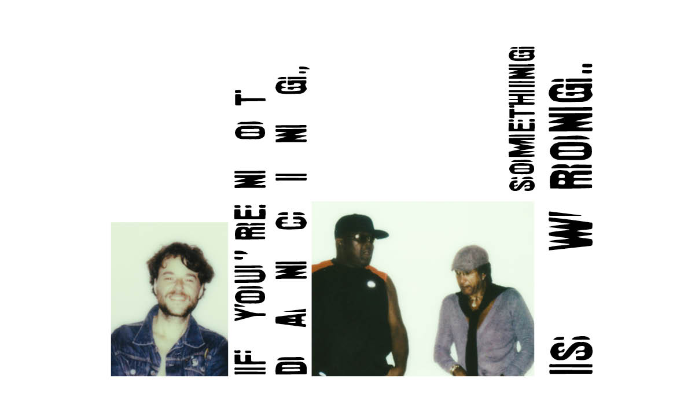
Rhythm is rhythm.
This is the lesson that Jamaican duo Sly & Robbie have taught us time and time again over the years. Whether they’re sitting down with musicians from their home country or a group composed of artists from different lands, it’s all the same. Let the vibe guide. Record the first take. Move on to the next one. With a discography that now spans nearly four decades, it’s a process that speaks for itself. Matias Aguayo also values spontaneity. His Cómeme label seemingly has an artist based in every country in Latin America, all pushing to produce the most elemental dance music they can craft. No frills. Just rhythm.
This summer Aguayo met Sly & Robbie in Paris after the duo’s band rehearsed at Studio Bleu in Port Saint-Denis and performed a live session on Radio France. Aguayo watched the band playing throughout the day, clearly itching to get in on the action. Following the radio gig, they decamped to a nearby hotel to take pictures and chat.
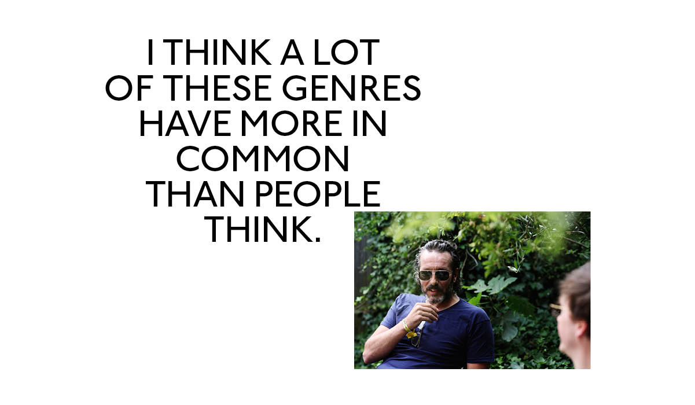
Over the years, DJs have faced rollercoaster rides regarding their reputations.
First, it seemed ridiculous to pay someone to only play records. Then they became exalted storytellers with mysterious skills. Now, with the advent of technology, it’s said that anyone can be a DJ. Two artists that put the lie to this modern view are DJ Harvey and Ben UFO, spinners that represent what a DJ can – and should – be. While they’re of two separate generations (and personality types), their approach is similar: They are unpretentious educators and devoted entertainers.
After a set at Lovebox in London, Harvey decided to stay a few days in the capital city. He met Ben in a garden by the canal in Hackney to talk about their shared craft. After the conversation took place, they decamped to a local restaurant where Harvey ordered the meatiest steak on the menu.
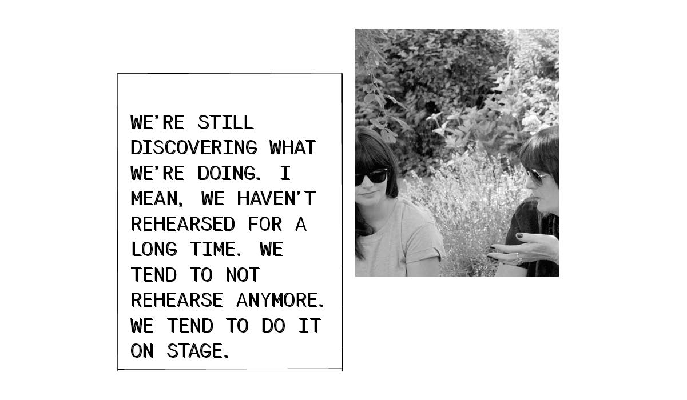
Expectation is a powerful thing.
When you see a guitar get strummed, you anticipate a certain sound to emerge from the speaker. The music of Cosey Fanni Tutti and Nik Void consistently tries to upend these expectations. Both come from an English art school background, an education that was decidedly non-musical in nature. As a result, their work is often as conceptual as it is visceral. What makes them so special, though, is that it never sacrifices one for the other. Cosey in Throbbing Gristle and Chris & Cosey, Void in Factory Floor – they always leave a mark.
Cosey and partner Chris Carter have lived in Norfolk for many ye- ars in a converted schoolhouse. It was there that they practiced for their 2012 live show with Void. On a sweltering summer day in July, Void returned for a conversation with Cosey. It was held in the garden, with Cosey’s cat Dexter often joining the two at the table.
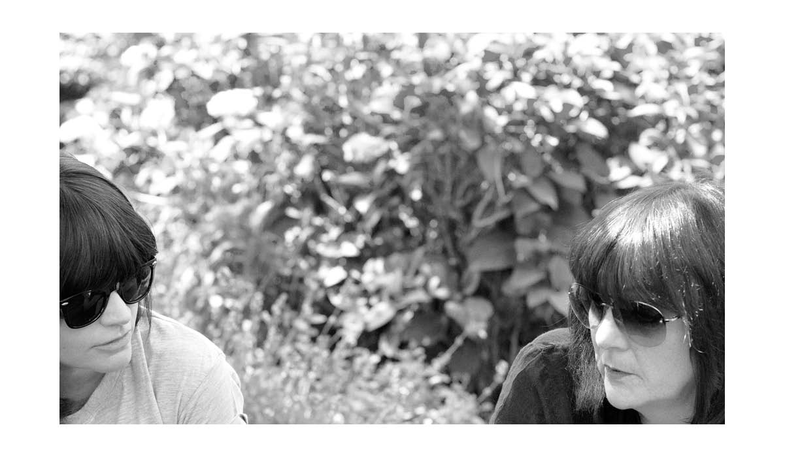
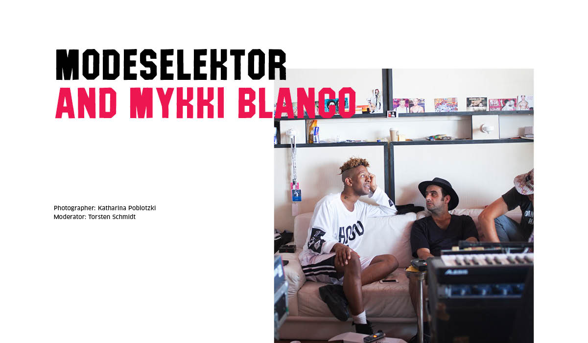
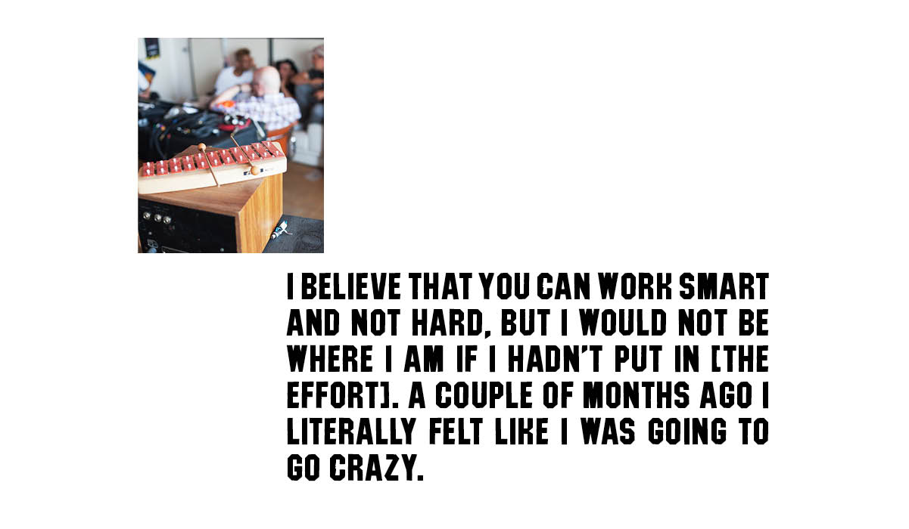
Modeselektor and Mykki Blanco are misfits that have carved out a unique space for themselves.
Modeselektor never quite fit any particular genre, so they made Monkeytown and 50Weapons – two labels that act as a showcase for their varied interests. Mykki Blanco, meanwhile, is a cross-dressing rapper that transformed an art project into a career performing music around the world. So it seemed absolutely natural that Modeselektor booked Blanco to play at their stage at the 2013 Melt! Festival. The trio met in Berlin at Modeselektor’s studio on July 19, both having flown to the city that morning. Blanco was due to play in the early evening. Modeselektor were set to play a DJ set at 3:30 AM. By the time they took the stage, Blanco had already left for Belgium. He was booked to play Dour Festival, an event that Modeselektor had played the day before.
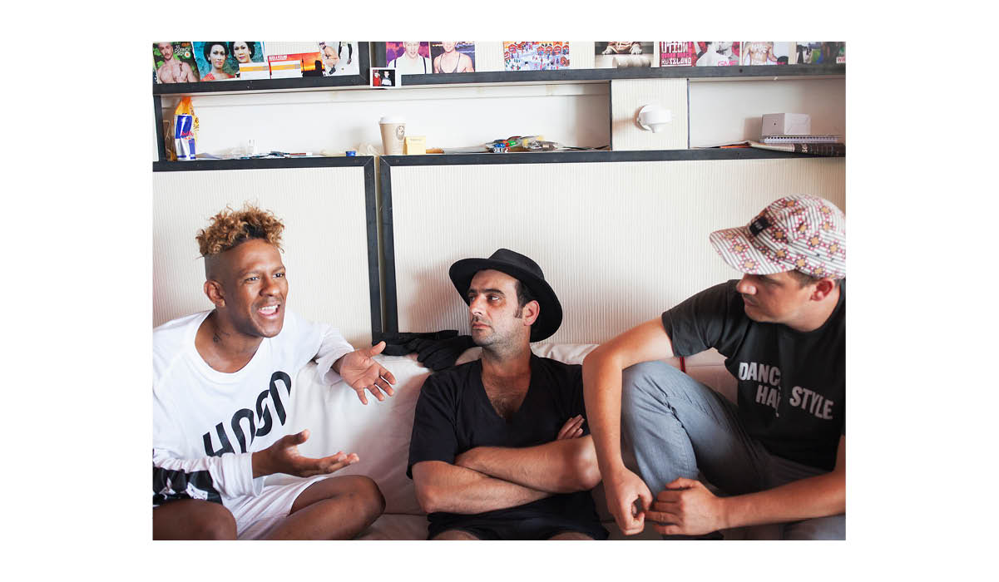
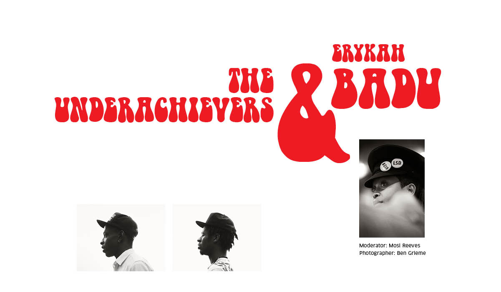
Erykah Badu and New York hip hop duo the Underachievers code their music, burying signals inside relatable emotions and dexterous rapping. For Badu, Issa Dash and Ak, music is a way of providing hints and possibilities – not definitive and didactic answers.
In early August, the Underachievers flew to Dallas to visit Badu in her suburban home. As the duo arrived, they noticed the words “Love Forgive Evolve” written in chalk on the garage door. Outside, Dash bummed a cigarette off Badu, surprised to see that they favored the same esoteric brand. As the conversation later took place indoors, Badu popped Hayao Miyazaki’s Spirited Away into a DVD player, freezing the film at the start menu. After the talk finished, Badu hit play.
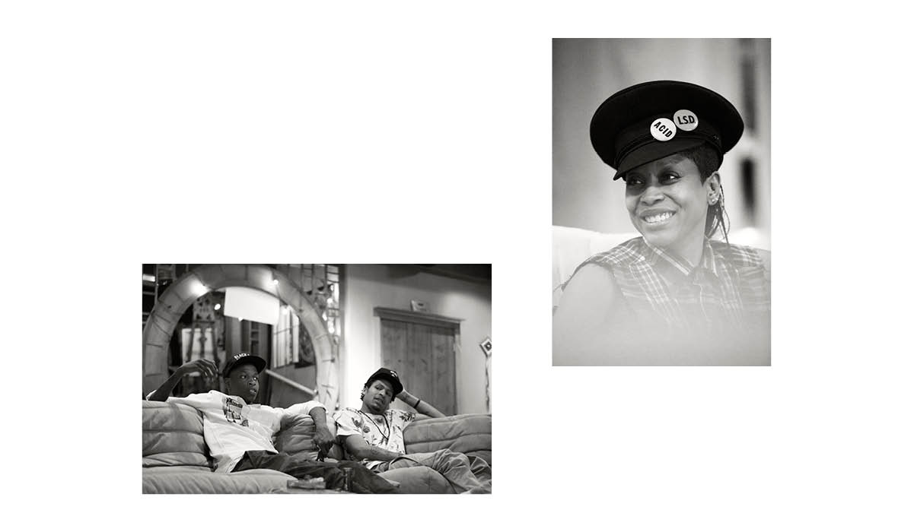
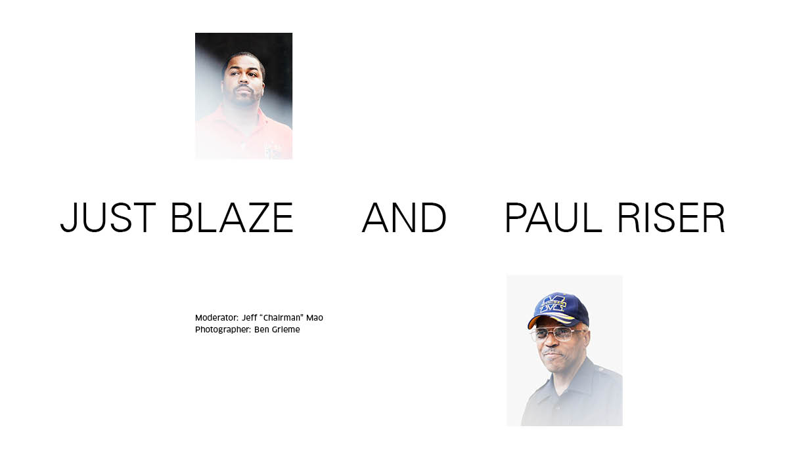
Paul Riser and Just Blaze know a thing or two about hit factories – Riser, as an arranger for Motown, and Blaze, as Roc-A-Fella Records’ producer in residence. The duo come from distinctly different gene- rations, of course, but when Riser flew to New York in the middle of July to meet Blaze at the Red Bull Music Academy, it was immedia- tely clear that the stories that they were sharing had plenty of commonalities. Halfway through the conversation, Jeff “Chairman” Mao took a quick break to show Riser a 12-inch called “What We Do...” that Blaze had produced. It contains a sample from Creative Source’s “I Just Can’t See Myself Without You,” a track whose strings were arranged by Riser. If you go back far enough in Blaze’s Instagram account, you just might be able to find them holding each other’s record.
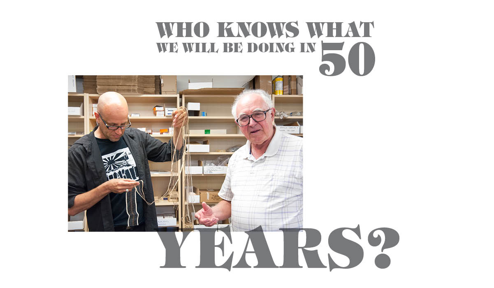
Music is the result not only of the imagination, but the instruments and the interfaces which we use to express it.
What strange new worlds could we conjure if we jettisoned the traditional models? This is the kind of question that drove Tom Oberheim and his company to explore new ways of shaping sounds, stacking oscillators and making musical machines talk to each other. Robert Henke has also made a habit of throwing out the rulebook, helping to found the now standard music software program Ableton Live, as well as creating dense worlds of dubby electronics and deep industrialized grooves as Monolake. As a musician and interface designer, Henke treads the tightrope between free-spirited artist and logically-minded instrument builder better than most.
In celebration of its 15th anniversary, the Red Bull Music Academy – revered as one of the most progressive institutions in today's musical landscape – has paired up a compelling selection of top artists and industry insiders, curating conversations on some of the most relevant topics in music today.
For The Record features personalities like Nile Rodgers, Erykah Badu, DJ Harvey, Lee ‘Scratch’ Perry and Just Blaze in conversation with their peers. The 15 talks took place around the world in locations such as Amsterdam, Paris, New York and Berlin. Wide-ranging and expansive, the artists involved touched on an array of topics, live performance, instruments/interfaces, conceptualism, drumming, and rhythm among them.
In addition to the conversations, top music journalists – including Philip Sherburne, Joe Muggs, Jeff ‘Chairman’ Mao and Sheryl Garratt – contribute essays about each of the personalities included. Together with stunning visual design by Chris Rehberger’s Double Standards agency, the results make for one of the most insightful publications on the current state of music and the music industry.
The book is available through Gestalten